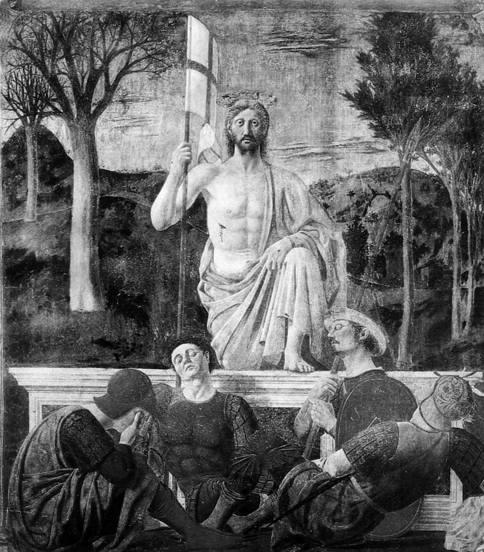
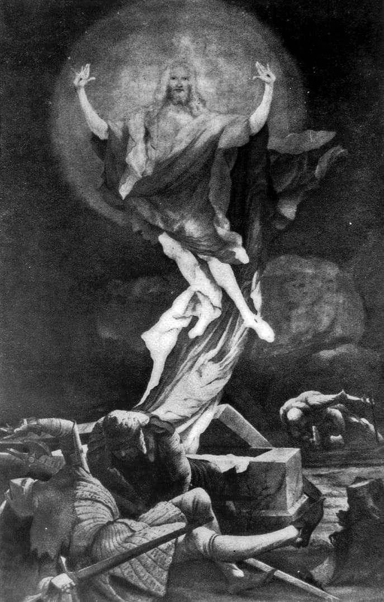
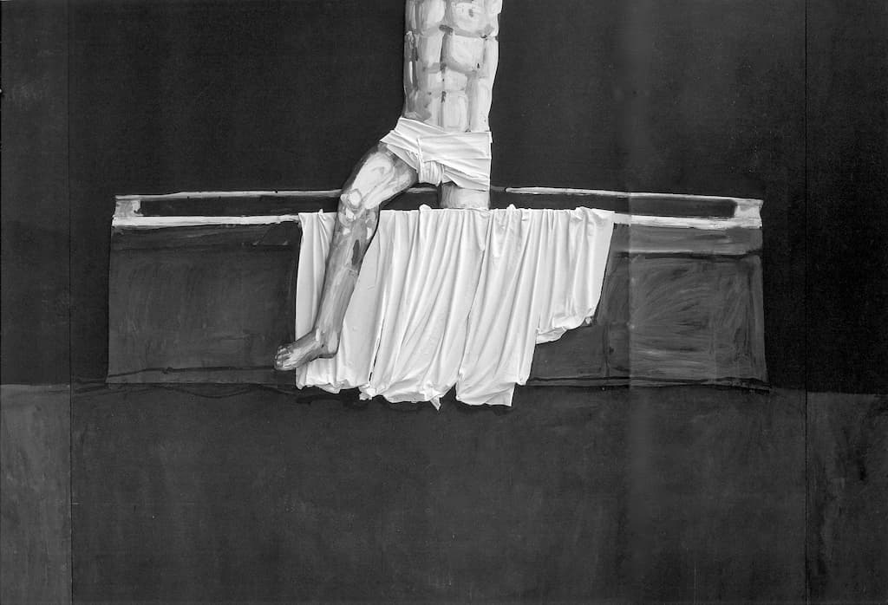

Ruptura din Duecento și schimbarea dreptarului Bisericii Romano-Catolice
Schimbarea dreptarului bisericesc este un act deliberat semnat de romano-catolicism. A fost „finalizat“ în Duecento. Prin urmare, occidentul creștin este răspunzător nu numai de dezastrul pe care și l-a pricinuit singur, ci și de celelalte alunecări doctrinare pricinuite altor neamuri. Astăzi cei care-l mustră aspru sunt icoana și dreptarul ei, principale lui victime și ulterior, ale laicității celui de-al doilea mileniu. Mai nou, clerul romano-catolic încearcă de ochii lumii și pentru a nu se arăta codaș duhovnicește, să „reconsacre“ icoana, fără să o poată recupera decât prin prisma habitusurilor culturale. De aceea se adresează icoanei muzeal și îi „cinstește“ în mod predilect doar capodoperele recunoscute.
Ruptura icoanei bizantine din Duecento – schismă a unității imaginii bisericești – a avut drept scop imediat demolarea până în temelii a canonului Bisericii Una, urmată, destul de curând, și de schimbarea dreptarului. Am notat corect „demolarea canonului“, fiindcă în occidentul catolic nimeni nu a găsit la vremea respectivă un substitut doctrinar de talia canonului bisericesc bizantin. Așa-zisul „canon“ gotic era totuși cel mult summa unui stil și în nici un caz un canon eclezial. Din punct de vedere duhovnicesc erau absolut incompatibile și ca putere și ca rang. De aceea demolarea s-a făcut pe furiș, forțat și prin ucaz!
În contrast, schimbarea dreptarului bisericesc cu doctrină canonică amputată, s-a făcut mai destins și a fost consolidată printr-un embargo imagistic menținut până aproape de epoca noastră. Iconoclaștii apuseni ai rupturii au pregătit cu grijă schimbarea dreptarului, dinadins începând cu abolirea canonului bizantin, pentru că doar ghilotinarea rapidă a laturii lui doctrinare făcea posibilă – fără a da răgaz comparării lor prealabile – înlocuirea impunătorului dreptar bizantin cu o sumă de principii ale unui stil. Cu toate că goticul nu reprezintă cultul unei credințe, occidentul creștin a admis fără să clipească schimbarea laturii aplicate, a dreptarului bisericesc abolit și decapitat doctrinar, cu pseudo-dreptarul „obișnuințelor formative“ ale stilului gotic. Să reținem, ca primă piesa importantă a studiului nostru, faptul că în Duecento apostazia occidentală a schimbării dreptarului a pus pentru prima oară în lume dreptarul Bisericii Una pe același plan cu stilul culturii unei epocii, pentru ca în cele din urmă dreptarul eclezial să fie schimbat și scos din uz ca orice produs cultural expirat! O gafă teologică și canonică de proporții nemaiîntâlnite, ale cărei roade otrăvite le culegem abia acum… (Fig.1)
În fața Bisericii, pe cât de pustiită de schismă, pe atât de înmărmurită de arbitrariul schimbării dreptarului, Episcopul Romei, laolaltă cu teologii împăratului Carol Magnul au adus în sprijin bineștiutele justificări, pregătite și ele dinainte, care astăzi, ca și atunci, n-au avut drept scop decât camuflarea adevăratului motiv: hotărârea occidentului catolic de a se institui hegemonic în lume.
Iconoclasmul catolic
În mod evident revoluția este totală, iar noua așezarea axiologică a Bisericii Apusene neagă orice valoare pneumatică doctrinei, „unităților stilistice“ ale canonului ortodox și dreptarului bizantin. Sublimul geniu ecumenic al Romei, de atâtea ori dovedit prin fiecare mozaic, frescă sau edificiu care au reușit să dăinuie și să înfrunte tacit, dar și drastic, iconoclasmul în versiunea romano-catolică din Duecento, a devenit din genial bizantin, feroce antibizantin! Dacă în Bizanțul Bisericii Una iconoclasmul a eșuat „pozitiv“, dând naștere indirect cristologiei, în Apusul Europei „a reușit” negativ pe deplin, răspândindu-se tumoral până astăzi. Ca și în cazul iconoclasmului bizantin, și cel latin este o emanație ideologică a imperiului.

Iconoclasmul bazileilor bizantini, care până la urmă n-a găsit teren propice în Bizanțul Bisericii Nedespărțite, manifestându-și apostazia doar c.c.a. 150 de ani, a prins în schimb rădăcini solide în imperiul lui Carol Magnul, fiind prompt susținut de interesele hegemonic ale papalității precum și de dispoziția pietistă a credinței omului apusean al Bisericii occidentale scindate, instalându-se, de această dată, pe durata mai multor secole. Turnurile sale de pază încă există, dar fortăreața a încetat de mult să mai pară cuiva inexpugnabilă. Prin urmare, păstrându-se una duhovnicește și trupește, Biserica Universală a fost cutremurată de iconoclasm, fără a fi însă biruită, în timp ce ca unitate spartă, partea ei ruptă a fost cotropită esențial și pe timp îndelungat. Până una alta, ar fi util și ar reprezenta un pas important în căutarea unității pierdute, dacă am cădea cu toții de acord – și creștinii răsăriteni și creștinii apuseni – că dorul hegemonic al Catolicismului de la debutul celui de al doilea mileniu, n-ar fi reușit niciodată să capete realitate instituțională și să se înțelenească bisericește, în absența goticității franceze și a „naționalismul ei european“ – strămoșul unități europene de astăzi! – preferat de strașnicul abate Suger. Proiectul lui Suger urmărea să universalizeze goticitatea naționalistă și ultrahegemonică a Franței și, în final să o ridice la rang de model ecumenic. Felul cum gândea Suger și cum își exprima în epocă utopicul său „internaționalism naționalist“ se găsește detaliat în minunata carte a lui Erwin Panowski, „Arhitectură gotică și gândire scolastică“(Editura Anastasia). Până una alta, este bine să subliniem că aplombul modalității gotice, al cărui ctitor stilistic va rămâne veșnic abatele, inaugurează o premieră culturală absolută: convertirea dogmei teologice în model stilistic cultural.
Cultura este un produs exclusiv religios, dar nebisericesc
Nu trebuie uitat niciodată că înainte de a-și construi profilul distinct, cultura a prins cheag și s-a manifestat în cadrele imaginii religioase emancipate, și doar mai pe urmă ca derivat „îndepărtat“ al acesteia. Cultura este un produs exclusiv religios, dar nebisericesc. A vorbi, cum frecvent se vorbește astăzi, despre „cultura bisericească“ este nu numai total impropriu, ci în directă contradicție cu originea religioasă a faptului cultural. Fiindcă însuși creștinismul nu este religios, ci bisericesc. Creștinismul, cum observă perspicace teologul Schmemann, nu este religios; este capătul religiilor. Schimbarea dreptarului și debutul tabloului religios înseamnă și debutul „religiozificării“ creștinismului, alinierii lui în continuarea religiilor tradiționale,antice. Și iarăși, a numi „cultură bisericească“ patrimoniul frumuseților liturgice ale Bisericii este modul ireverențios și incult de a se exprima public al culturii.
Este spectaculară constatarea, că fără canon și fără icoană, romano-catolicismul nu a produs „doctrinar“ decât cultura și sectele. Dar în mod normal, și cultura ar trebui și ea corect percepută tot ca o sectă, alături de restul sectelor catolicismului, Biserica apuseană se ferește să o numească astfel și, nițel temătoare, o „cinstește“ în doi peri, cu toate că dintre toate sectele ei cultura este cea care îi erodează cel mai activ, mai insidios și mai sistematic misiunea și pastorația. Născută din ambianța ei religioasă, cultura laică și produsele sale redutabile pun perpetuu în criză calitatea propovăduirii romano-catolicismului, îl subordonează indirect iar pe furiș îl descalifică concurențial. Poate fi negat faptul că nici mai mult, nici mai puțin, decât produsele culturii imaginii au fost cele care au scos primele în evidență „gustul pentru fad“ și kitsch-ul „saint-sulpicianist“ ca noxe ale discursului catolic, și unul și altul cazați mortal în chiar miezul expresiei bisericești.
Ruptura icoanei va marca nefast cariera europeană a occidentului creștin. Ea va fi, începând încă din Cinquecento, ritmată insuportabil de rupturi succesive, cu conținuturi din ce în ce mai pronunțat tributare conflictelor ideologice, toate numite ușuratec mode, însă toate târâte de catastrofala ruptură originară. Convulsiile acestui traiect imagistic, care se manifestă fără întrerupere de la Renaștere și până la furibundele avangarde insurecționale de la începutul secolului XX, este considerat de unii comentatori drept „urcuș evolutiv“! dar la fel de bine este calificat ca tragică involuție, de punctul de vedere îmbisericit, atunci când îl contemplă în racourci, adică în prelungirea rupturii icoanei și a iminentei căderi a artei religioase apusene în cadrele expirate ale modului de a simți și de a înțelege revolut, de dinaintea intrării Logosului și a Bisericii Lui în istorie.
Trebuie făcut efortul de a schimba lentila măritoare a culturii laice, pentru a zări în sublimul geniu performer, amăgitor și paradisiac al unui Fra Angelico, Lorenzetti, Pierro de la Francesca etc. germenii modernismului insurecțional și al istericului ideologism al avangardelor recente. Opera lor surâzător emancipată, curtenitoare ca rondelurile și cântecele cavalerești medievale este în realitate crisalida tuturor estetismelor, de la zbuciumul frondelor programatice și până la fundamentalismul iresponsabil și relativist al postmodernismului.
Puterea publică a culturii
Ovaționată public de laicitatea din ce în ce mai secularizată a beneficiarilor, cultura a avut grijă să-și „corecteze“ discret biografia reală, în așa fel încât cea nouă să ajungă să-i confirme „urcușul evolutiv“, să-i facă uitată proveniența religioasă și să-i infirme seria fatală de eșecuri axiologice. Puterea publică a culturii constă în simulacrul instituționalizării și administrării valorilor, a arbitrajului imparțial a tuturor divergențelor polemice și aclamării prestației formative secularizată, liberă de prejudecăți. Astăzi, cea mai mare credibilitate o au instituțiile culturii sau cele produse de cultură, sau în parteneriat cu cultura. Un demers bisericesc, bunăoară, devine plauzibil imediat ce este asociat unei „recomandări“ culturale! Inversul este inacceptabil! Un partid politic se validează electoral prin garanțiile pe care le oferă o instituție culturală și prezența favorabilă a unui vip cultural! Cum a reușit datul cultural să pară mai serios în ochii oamenilor, decât datul bisericesc sau politic? Cum a reușit cultura o asemenea performanță publică? Principalul ei agent publicitar este „necanonicitatea“ ei constitutivă și, drept consecință, emanciparea criteriilor. Deocamdată n-am spus „relativizare“, ci doar emancipare… Criteriile emancipate reprezintă instrumentul cel mai eficace prin care cultura obstrucționează după bunul ei plac adevărul realității faptului curent. Cu ajutorul lor selecționează, sistematizează, împarte, arhivează, glosează, conservă, include, exclude peste tot. Îl exercită fără drept de apel, în primul rând pentru „a-și aranja“ căderea treptată ca urcuș evolutiv! Așa se face că, transmis sistemului formativ, acesta instituționalizează în numele ei o istorie fictivă a culturii, cu perioade culturale fictive, fictiv definite și prezentate în mod intenționat fals. Arhivarea, comentarea și reprezentarea patrimoniului universal folosește preponderent criterii estetice și opiniile ideologiilor culturale la zi. Pentru cultură, „obiectivitatea este o subiectivitate bine instituționalizată“, cum zicea precis și oarecum cinic Roland Barthes. Tezaurele societăților sacrale și religioase tradiționale sunt prezentate ca piese ale „culturilor“ asiriene, aztece, grecești etc., cu toate că nici una din aceste perioade spirituale antice nu a produs cultură și nici nu a cunoscut tipologic și instituțional domeniul culturii. Valorile imaginilor de pretutindeni din desimea istoriei sunt în așa fel expuse ca să o anunțe pe ea, pe cultură, ca pe o (un) mesia a expresiei universale așteptată cu înfrigurare, din toate timpurile!

Dispozitivul selectiv al culturii pune surdină acolo unde produce valori omul duhovnicesc, de aceea exaltă până la cele mai delirante cote encomiastice produsele culturale ale omului sufletesc, psihic. Arta primului mileniu creștin este aruncată pe același raft cu produsele spirituale ale întregii antichități, în vreme ce Evul Mediu Occidental – care a odrăslit-o și față de care cultura se simte totuși obligată – este proslăvit alături de „avangarde“ de toate oficinele culturale ale globului. În același mod ascunde și torpilează orice zvon privind redescoperirea icoanei, orice fenomen sau gesticulație care intenționează să o promoveze ca imagine mondială și ca reper formativ absolut.
Doar așa pot fi explicate diatribele ei secularizante care au făcut din dreptarul bizantin principalul instrument exterminator al originalității artei bisericești, dispozitivul malefic care ucide în fașă orice exprimare frustă, spontană și autentică. Așa a ajuns să fie acceptat pe scară largă clișeul „dreptarului polițai“, care pândește nu numai arta bisericească ci și arta în general, cu forța represivă a interdicției. Arta canonică produsă de Biserică, a devenit domeniul lui NU, al negației absolute care, în numele conformității doctrinare, reprimă violent frumosul și îl împiedică să salveze lumea!?
Din volumul în curs de apariție „Noi și icoana”/Iconoclasmul latin - despre ruptura din Duecento și schimbarea dreptarului Bisericii Romano-Catolice.

Comentarii